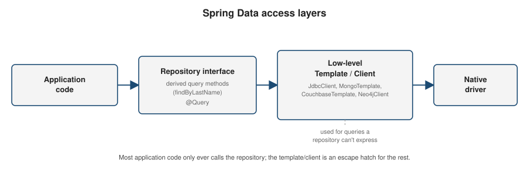

Spring Data Overview
|
This content was generated with the assistance of AI and should be verified against the official documentation before being relied on in production. |
Spring Data is a family of modules — JPA, JDBC, MongoDB, Couchbase, Neo4j, Redis, and others — that all share the same repository programming model. Learning that shared model once means every store-specific page that follows only has to explain what is different about its own store.
The repository abstraction
Every Spring Data module builds on the same small hierarchy of marker interfaces from spring-data-commons.
Repository<T, ID> is the empty base marker; CrudRepository<T, ID> adds basic create/read/update/delete
operations; ListCrudRepository<T, ID> is the same as CrudRepository but returns List instead of
Iterable from findAll() and findAllById(…), which is usually the more convenient choice on modern
Java:
public interface CustomerRepository extends ListCrudRepository<Customer, Long> {
}Declaring the interface is enough — Spring Data generates the implementation at startup by scanning for repository interfaces and creating a proxy for each one. No implementation class is ever written by hand:
@Service
public class CustomerService {
private final CustomerRepository customers;
public CustomerService(CustomerRepository customers) {
this.customers = customers;
}
public Customer save(Customer customer) {
return customers.save(customer); // CrudRepository.save
}
public Optional<Customer> findById(Long id) {
return customers.findById(id); // CrudRepository.findById
}
public List<Customer> findAll() {
return customers.findAll(); // ListCrudRepository.findAll
}
public void delete(Customer customer) {
customers.delete(customer); // CrudRepository.delete
}
}See Working with Spring Data Repositories for the full hierarchy, including the paging/sorting and reactive variants used later on this page.
Derived query methods
The most distinctive feature of the repository abstraction is deriving a query straight from a method signature — no implementation, no annotation, just a name Spring Data can parse:
public interface CustomerRepository extends ListCrudRepository<Customer, Long> {
List<Customer> findByLastName(String lastName);
List<Customer> findByLastNameAndFirstName(String lastName, String firstName);
List<Customer> findByEmailIgnoreCase(String email);
List<Customer> findByCreatedAtAfter(Instant since);
boolean existsByEmail(String email);
long countByLastName(String lastName);
void deleteByEmail(String email);
}The method name is parsed into a subject (find, exists, count, delete) and a predicate built from
property expressions (LastName) joined with And / Or, plus keywords such as IgnoreCase, After,
Between, Containing, StartingWith, and OrderBy…Asc/Desc. Property names are resolved against the
entity’s properties (and traverse nested properties, e.g. findByAddressCity), so a typo in the method name
fails fast at application startup rather than at query time. See
Defining Query
Methods for the complete keyword list and the resolution algorithm.
@Query
Once a derived name would be too long or can’t express what is needed, annotate the method with the store’s native query language instead:
public interface CustomerRepository extends ListCrudRepository<Customer, Long> {
@Query("select c from Customer c where c.status = :status and c.createdAt > :since")
List<Customer> findActiveSince(@Param("status") String status, @Param("since") Instant since);
@Modifying
@Query("update Customer c set c.status = :status where c.id = :id")
int updateStatus(@Param("id") Long id, @Param("status") String status);
}@Query accepts either the store’s query language (JPQL for Spring Data JPA, a Mongo JSON query for Spring
Data MongoDB, N1QL for Spring Data Couchbase, Cypher for Spring Data Neo4j) or, on some modules, a native
query flag. Mutating statements need @Modifying and normally run inside a transaction. Each store-specific
page later in this section shows its own query language in more depth.
Paging and sorting
PagingAndSortingRepository<T, ID> (already pulled in by most module-specific base interfaces) adds
overloads that accept a Sort or a Pageable:
public interface CustomerRepository extends ListCrudRepository<Customer, Long>,
PagingAndSortingRepository<Customer, Long> {
Page<Customer> findByLastName(String lastName, Pageable pageable);
}Pageable firstPage = PageRequest.of(0, 20, Sort.by("lastName").ascending().and(Sort.by("firstName")));
Page<Customer> page = customers.findByLastName("Smith", firstPage);
page.getContent(); // the 20 (or fewer) results on this page
page.getTotalElements(); // total matching rows across all pages
page.getTotalPages();
page.hasNext();
Pageable next = firstPage.next();Page<T> carries the total count (an extra query on most stores); Slice<T> is the cheaper alternative
when only "is there a next page" is needed, since it avoids that count query.
Keyset scrolling with Window<T>
Page/Pageable are offset-based under the hood, so a deep page still costs the underlying store a scan-and-
discard of every earlier row (see Pagination: Offset vs. Keyset). Since
Spring Data 3.1, ScrollPosition.keyset() plus Window<T> gives an offset-free alternative: the repository
method takes a ScrollPosition instead of a Pageable, and each returned Window<T> carries the position to
resume from, instead of a total count:
Window<Customer> findFirst20ByLastName(String lastName, Sort sort, ScrollPosition position);Window<Customer> window = customers.findFirst20ByLastName(
"Smith", Sort.by("id"), ScrollPosition.keyset());
window.getContent(); // up to 20 results
window.hasNext(); // whether another window follows
if (window.hasNext()) {
ScrollPosition next = window.positionAt(window.size() - 1);
Window<Customer> nextWindow = customers.findFirst20ByLastName("Smith", Sort.by("id"), next);
}window.positionAt(…) encodes the last row’s sort-key values as the next call’s ScrollPosition — the same
"carry the last-seen key forward" pattern as every store-specific keyset example on this site, just expressed
through the repository abstraction instead of a raw query. Each store-specific Spring Data page in this section
notes whether its module supports keyset scrolling natively.
Projections
A repository method does not have to return the full entity. An interface-based projection declares only the properties the caller needs, and Spring Data generates a proxy that reads just those columns/fields:
public interface CustomerSummary {
String getFirstName();
String getLastName();
}
public interface CustomerRepository extends ListCrudRepository<Customer, Long> {
List<CustomerSummary> findByLastName(String lastName);
}A DTO projection (a plain, non-interface class with a matching constructor) works the same way and is often preferred when the projection needs to be serialized directly:
public record CustomerSummaryDto(String firstName, String lastName) {
}
public interface CustomerRepository extends ListCrudRepository<Customer, Long> {
List<CustomerSummaryDto> findDtoByLastName(String lastName);
}Auditing
Spring Data can populate creation/modification metadata automatically. Annotate the entity’s fields and enable auditing on the module’s configuration:
public class Customer {
@Id
private Long id;
@CreatedDate
private Instant createdAt;
@LastModifiedDate
private Instant updatedAt;
@CreatedBy
private String createdBy;
@LastModifiedBy
private String lastModifiedBy;
// getters/setters omitted
}@Configuration
@EnableJpaAuditing // the equivalent annotation differs per module,
public class AuditingConfig { // e.g. @EnableMongoAuditing, @EnableNeo4jAuditing
@Bean
public AuditorAware<String> auditorAware() {
return () -> Optional.ofNullable(SecurityContextHolder.getContext().getAuthentication())
.map(Authentication::getName);
}
}@CreatedDate/@LastModifiedDate are set from the clock; @CreatedBy/@LastModifiedBy come from the
AuditorAware bean, which typically reads the current principal from Spring Security.
@Transactional
Repository methods that write are already transactional by default (Spring Data wraps save, delete, and
similar CRUD methods in a transaction), but a service method that calls several repository operations that
must succeed or fail together needs its own boundary:
@Service
public class TransferService {
private final AccountRepository accounts;
public TransferService(AccountRepository accounts) {
this.accounts = accounts;
}
@Transactional
public void transfer(Long fromId, Long toId, BigDecimal amount) {
Account from = accounts.findById(fromId).orElseThrow();
Account to = accounts.findById(toId).orElseThrow();
from.debit(amount);
to.credit(amount);
accounts.save(from);
accounts.save(to);
}
}Whether @Transactional maps onto a real ACID transaction depends entirely on the underlying store — relational databases via JPA/JDBC support full transactions, while document and graph stores vary (MongoDB
supports multi-document transactions on replica sets; plain key-value stores like Redis do not). Each
store-specific page covers its own transactional behavior.
So does the strength of its isolation guarantees. @Transactional carries an isolation attribute taking an
Isolation enum constant (DEFAULT, READ_UNCOMMITTED, READ_COMMITTED, REPEATABLE_READ, SERIALIZABLE),
but only the relational transaction managers honour it — they apply the level to the JDBC connection. The
document and graph managers do not: MongoTransactionManager silently ignores the attribute, while
CouchbaseCallbackTransactionManager and Neo4jTransactionManager reject a stricter-than-their-fixed-level
value with an exception. All three rely on their own concurrency models instead. See
Transaction Isolation & Locking for the isolation
levels, their performance impact, pessimistic locking with @Lock, and how it compares to the @Version
optimistic locking described next.
Everything above assumes the blocking stack, where a PlatformTransactionManager binds the connection to
the calling thread. With a ReactiveTransactionManager — R2dbcTransactionManager,
ReactiveMongoTransactionManager — there is no thread to bind to, so the transaction state travels in the
Reactor Context and belongs to a single subscription instead. The practical consequence is that the whole
unit of work must stay inside one reactive chain: an inner subscribe(), a publisher fired from doOnNext,
or an @Async hop all run detached from the chain, with no transactional Context, and quietly commit
outside the transaction. See
Reactive transactions and thread affinity for the full
pattern, including TransactionalOperator.
Optimistic locking with @Version
Every Spring Data module supports the same pattern for preventing a lost update — two concurrent writers
loading, modifying, and saving the same record, where the second save silently overwrites the first’s change.
Annotate a numeric (or timestamp) field @Version:
public class Account {
@Id
private Long id;
private BigDecimal balance;
@Version
private Long version;
}On every save, the module includes the version it originally read as part of the write’s condition (a SQL
WHERE … AND version = ? for JPA/JDBC, a compare-and-swap CAS value for Couchbase, a filtered updateOne for
MongoDB, a property match in the generated Cypher for Neo4j) and increments it. If another write already
succeeded in between, the condition matches nothing, the module detects it, and the save fails with an exception
in the OptimisticLockingFailureException family — itself a DataAccessException subtype (see
Core Annotations for what makes that translation possible).
Object-mapping stores throw OptimisticLockingFailureException directly (MongoDB, Couchbase, Neo4j); JPA/ORM
throws the more specific ObjectOptimisticLockingFailureException subtype, which additionally carries the
persistent class and identifier of the object that failed. Catching the common OptimisticLockingFailureException
parent works uniformly across every store; application code typically does this and either retries the
read-modify-write cycle or reports a conflict to the caller. Each store-specific page shows the concrete
mechanism — JPA’s generated UPDATE … WHERE version = ?, MongoDB’s @Version-aware save(), Couchbase’s use
of the underlying CAS value, and Neo4j’s version property on the node.
@Version never needs to be set or read by application code beyond declaring the field — the module manages
its value entirely, and setting it manually breaks the whole mechanism.
Entity inheritance and polymorphism
Modeling a class hierarchy is store-dependent enough that each page covers its own mechanism in depth rather than repeating one shared example here:
-
Spring Data JPA has the richest support, since relational inheritance is a well-studied mapping problem:
@InheritancewithSINGLE_TABLE(default),JOINED, orTABLE_PER_CLASS, plus@MappedSuperclassfor sharing fields without polymorphic queries. See Spring Data JPA's "Entity inheritance" section. -
MongoDB and Couchbase are schema-less document stores, so "inheritance" is really about deserializing the right Java subclass back out of a stored document — both write a hidden type-discriminator field (
_classby default) and read it back to pick the concrete class. See the "Polymorphic documents" section on Spring Data MongoDB and Spring Data Couchbase. -
Neo4j models a hierarchy the most naturally of the four, since a node can carry multiple labels at once — a subclass node is simply labeled with both its own type and every ancestor type. See the "Node inheritance" section on Spring Data Neo4j.
Which module for which database
Spring Data’s repository abstraction is the same everywhere; the choice of module depends only on where the data lives:
| Store | Module | Covered on |
|---|---|---|
Relational database (PostgreSQL, MySQL, SQL Server, …) |
Spring Data JPA (object-relational mapping) or Spring Data JDBC (a thinner, SQL-first mapping) |
|
MongoDB |
Spring Data MongoDB |
|
Couchbase |
Spring Data Couchbase |
|
Neo4j |
Spring Data Neo4j |
|
Redis (typically as a cache rather than a system of record) |
Spring Data Redis, most often through Spring’s cache abstraction |
Caching — see also Spring Data Redis & Custom Queries for repositories and custom queries against Redis itself |
Repository vs. low-level template/client
Every store-specific Spring Data module offers two ways in: the repository interfaces described above, and
a lower-level template/client (JdbcClient, MongoTemplate, CouchbaseTemplate, Neo4jClient, and
similar) that the repository implementation itself is built on:

Application code should reach for the repository first — derived query methods and @Query cover the large
majority of use cases with the least code. The template/client is the escape hatch for the rest: dynamic
queries built at runtime, bulk operations, store-specific features the repository abstraction doesn’t expose,
or fine-grained control over how a query executes. The next four pages
(Spring Data JPA, Spring
Data MongoDB, Spring Data Couchbase, and
Spring Data Neo4j) each show both sides — the repository and
the template/client — for their own store.